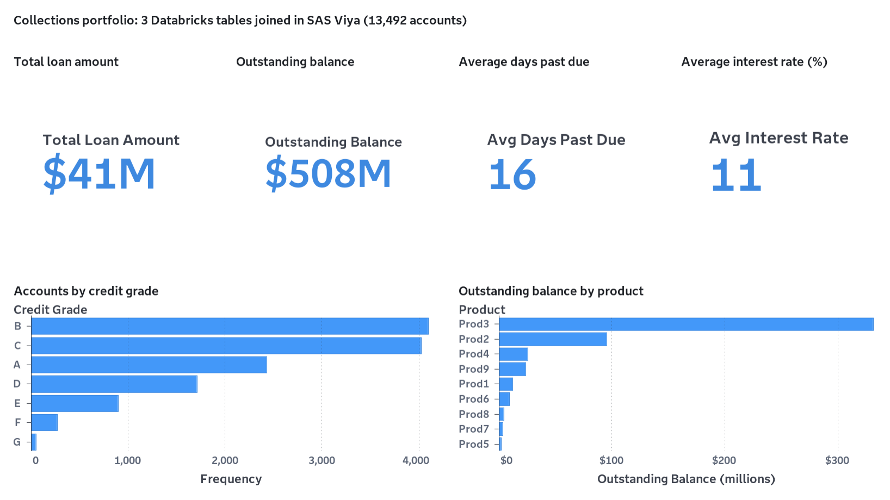
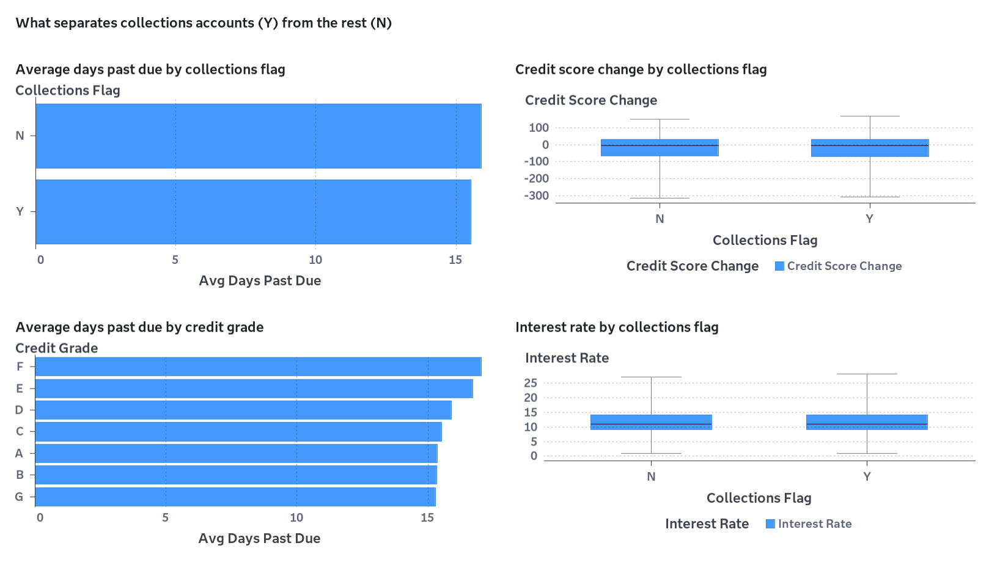
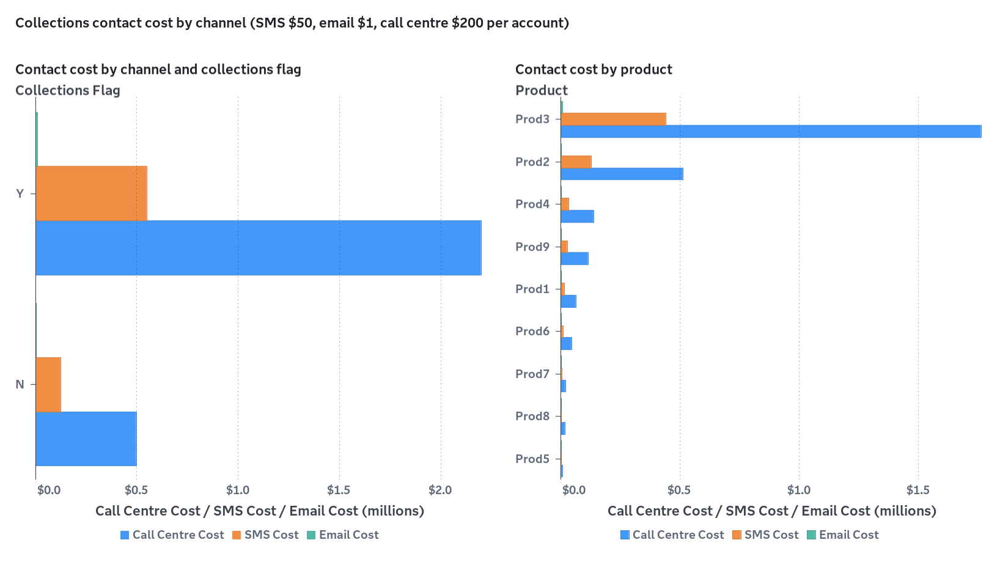

SAS Viya / customer intelligence lab
From collection signals
to a scored customer.
Join the customer story in CAS, shape a VA view, run a Model Studio champion, and decide what returns to Databricks.
Compose the customer base
Choose the three source tables that the SAS Studio job will join into a modeling-ready customer account view.
Choose a collection report
Select a starting point for the business conversation. The selected report becomes the brief for the VA build.
Find the champion model
Give the run a business question. Model Studio will compare candidates and return a customer-level risk score for the selected population.
Return the scored customers
Once the scored dataset is saved in Viya, choose whether the collection team should receive a copy back in the connected Databricks environment.
What actually ran on SAS Viya
Steps 01 to 03 executed for real against the connected Databricks workspace. Every figure below comes from a SAS log or a Viya service response.
libname db_test spark platform=databricks ... password="&token_from_my_folder";
proc sql;
create table work.final_merged_data as
select a.*, b.*, c.*
from db_test.customer_profile as a
left join db_test.account_summary as b
on a.PRIMARY_KEY = b.PRIMARY_KEY
left join db_test.financial_transactions as c
on a.PRIMARY_KEY = c.PRIMARY_KEY;
quit;Visual Analytics reports

Portfolio Overview$41M loans · $508M outstanding · 16 avg DPD
Risk DriversDays past due, credit score change, rate by flag
Contact StrategyCall centre, SMS and email cost by segmentModel Studio champion
| Partition | Rows | AUC | KS | Misclassification |
|---|---|---|---|---|
| Train | 8,095 | 1.000 | 1.000 | 0.0% |
| Validate | 4,048 | 0.949 | 0.756 | 7.7% |
| Test | 1,349 | 0.952 | 0.766 | 7.1% |
Five candidate models, selected on KS. A perfect training fit with steady validation and test scores, so the holdout figures are the ones to quote. Target: coll = Y (81% of accounts).